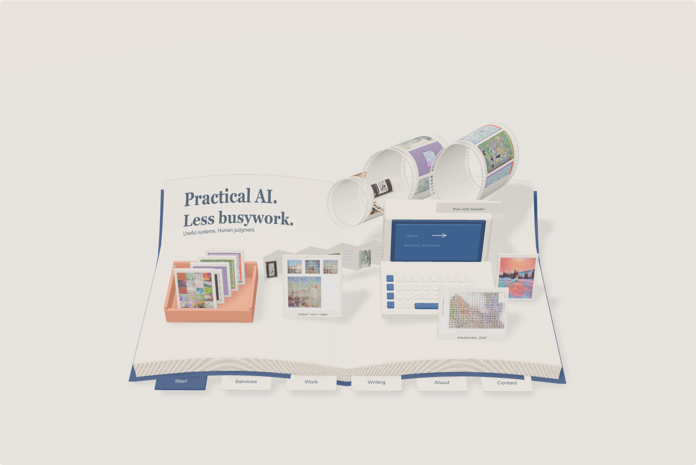
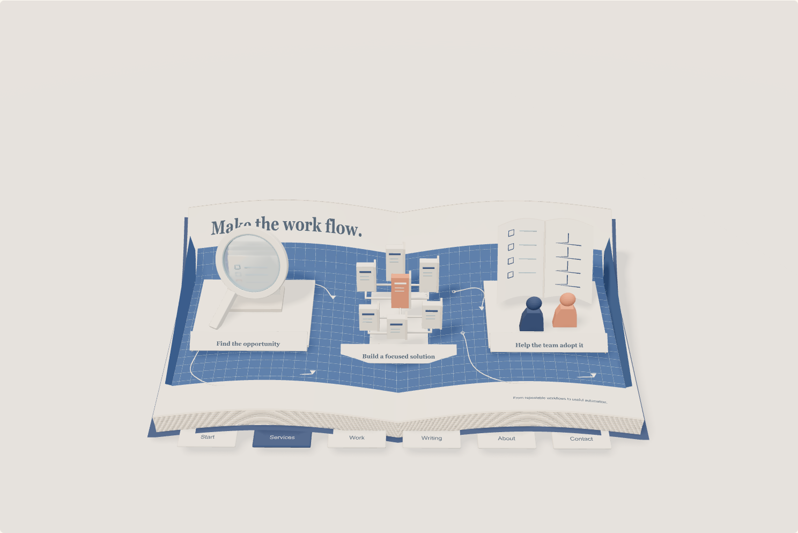
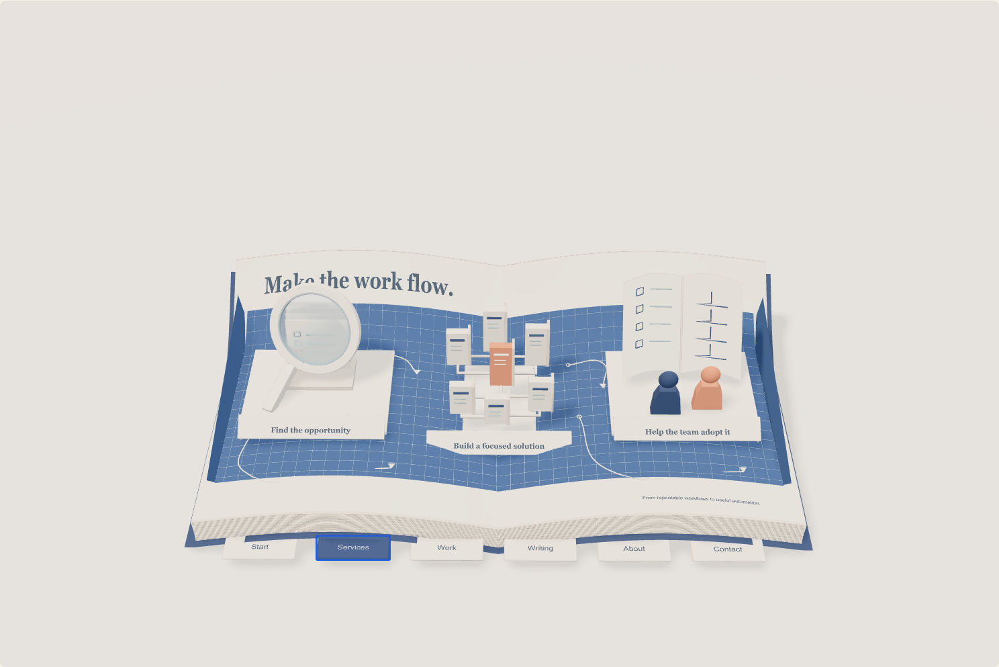
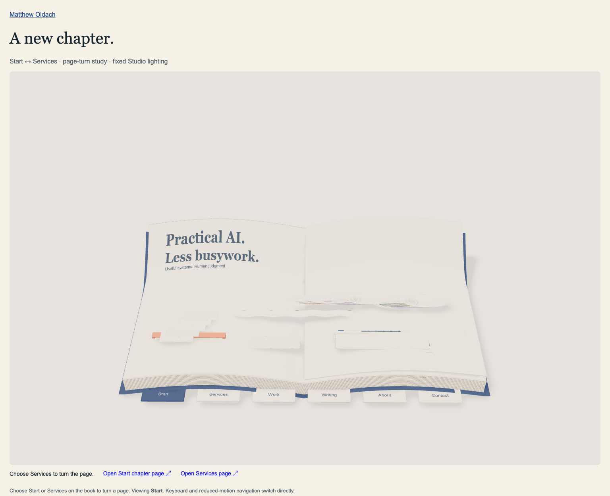
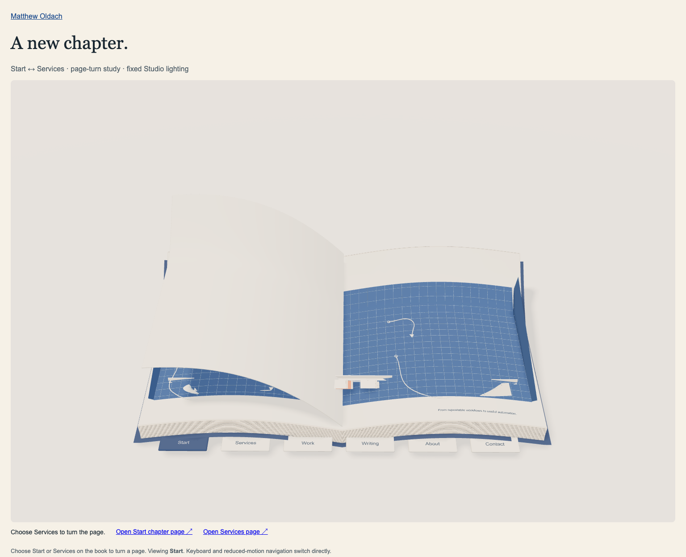
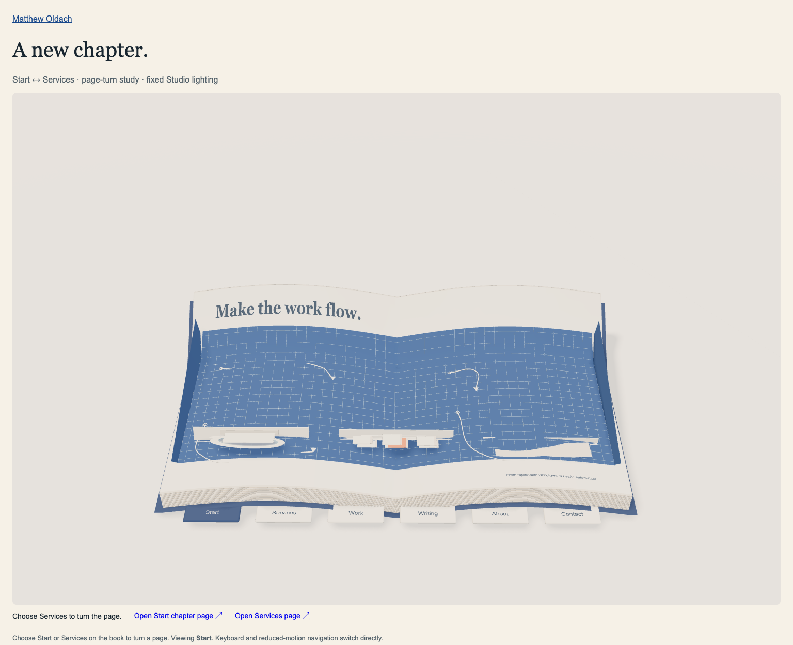
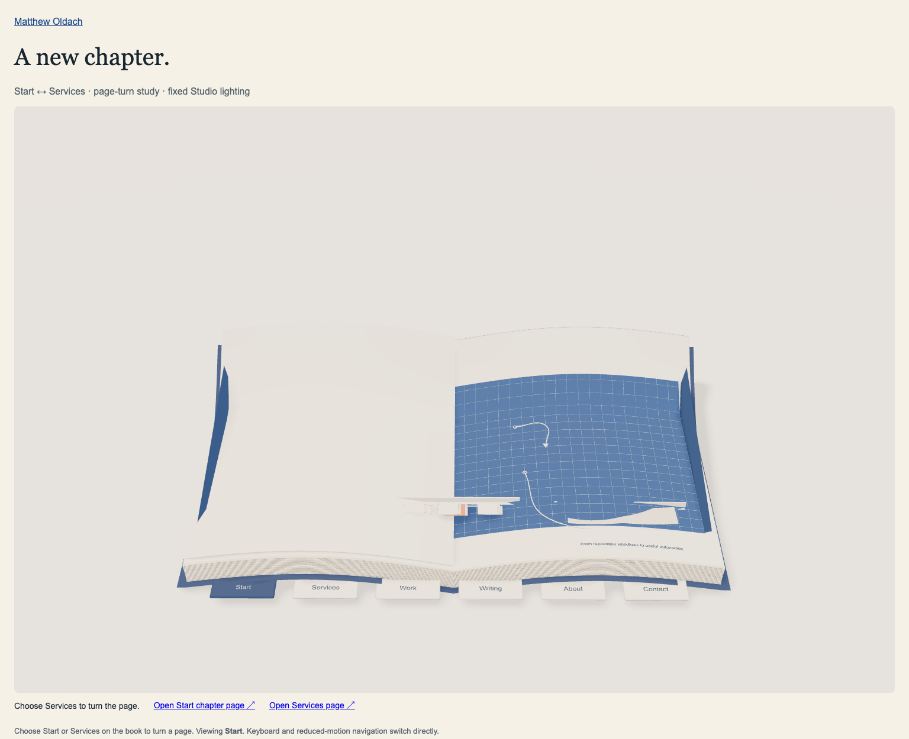
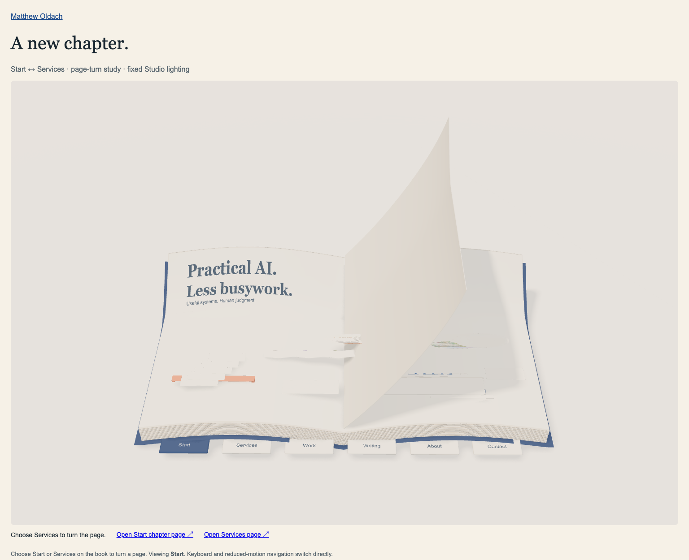

Matching camera: [0.12,17,18], target [0,2,0], 48 mm; 1488×992 stage. Baseline camera settings were changed only in browser response fixtures, not source files. Wider framing reserves room for the raised leaf.
Start
Existing chapter renderer

Animation-ready resting pose
Services

Existing chapter renderer

Animation-ready resting pose
Turning to services

25% of the 1.6-second timeline

50% of the 1.6-second timeline

75% of the 1.6-second timeline
Turning to start

25% of the 1.6-second timeline

50% of the 1.6-second timeline75% of the 1.6-second timeline